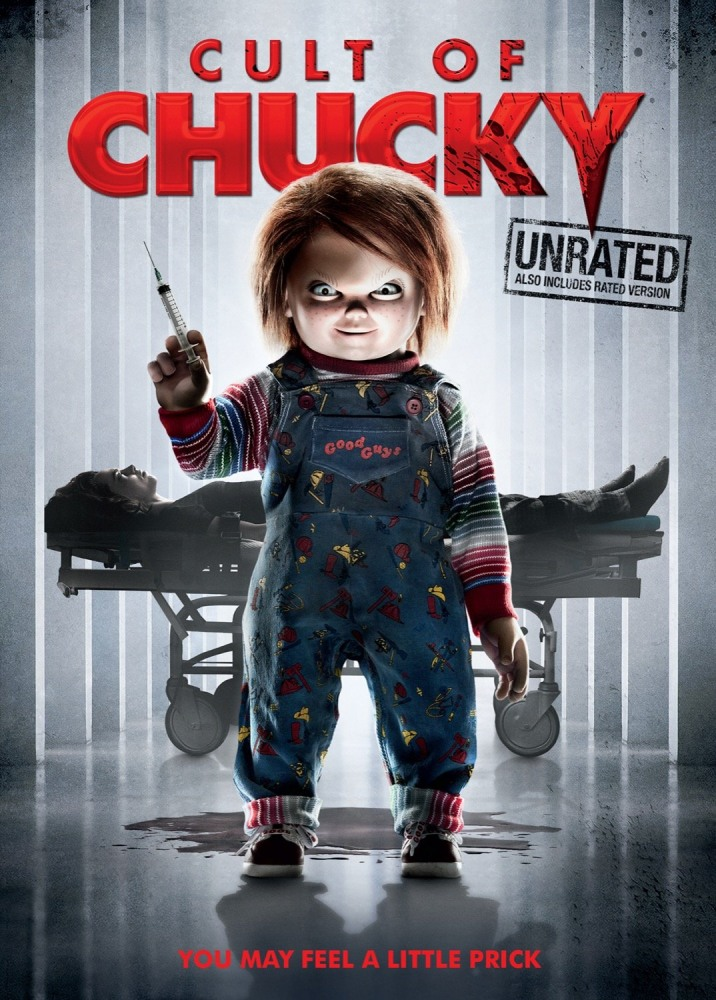

|  | |
Ника Пирс 4 года провела в лечебнице. Ее убеждают в том, что она виновна в гибели семьи, а не кукла Чаки. Когда лечащий врач предлагает новый вариант терапии с куклой с добрым лицом, в лечебнице начинают погибать люди, и Ника начинает думать, что ее кошмары реальны. Энди Барклай повзрослел и спешит на помощь, но ему хочет помешать Тиффани - невеста Чаки, готовая на все, чтобы помочь возлюбленному. |
|
| Дата выхода: 2017 г. (РФ) | Жанр: Ужасы Драма |
| Страна: США | Режиссёр: Дон Манчини |
| Музыка: Джозеф ЛоДука | Длительность: 91 мин. |